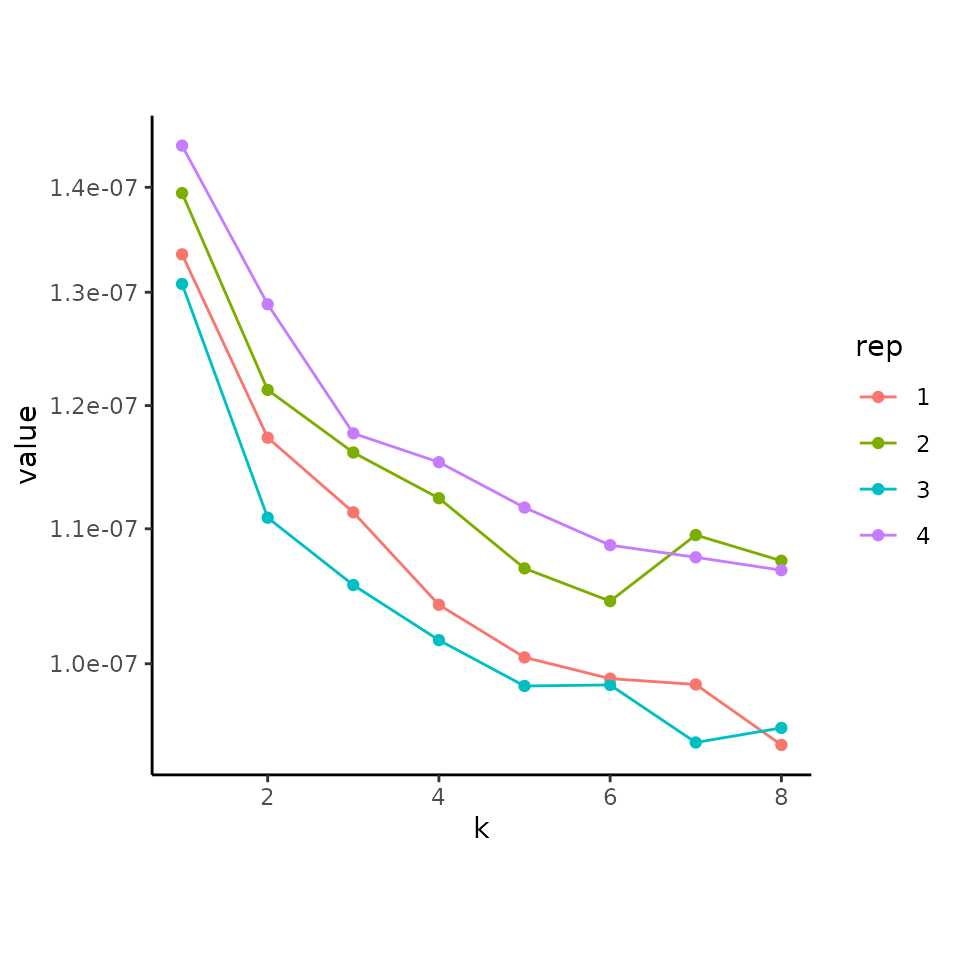
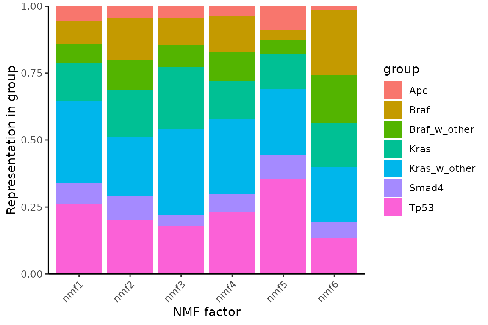
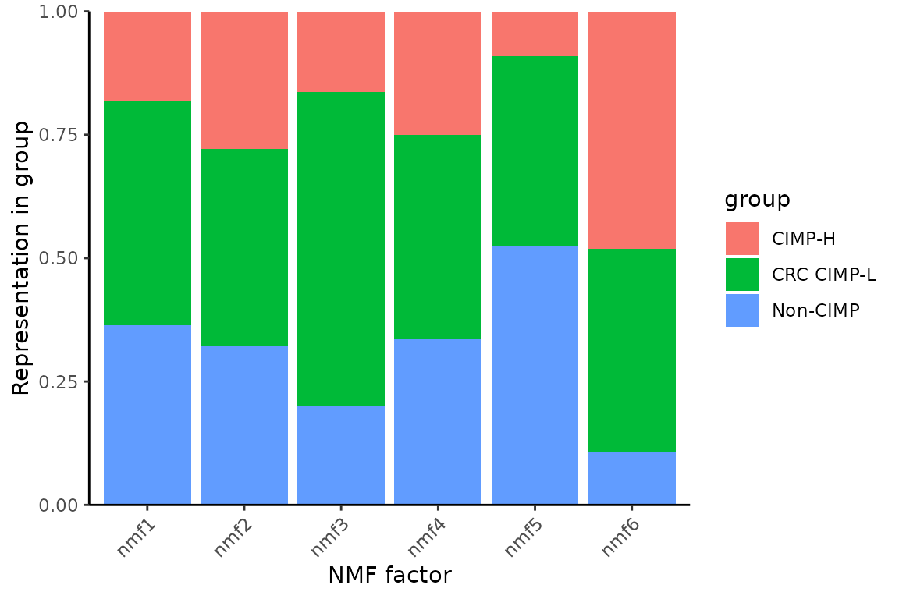
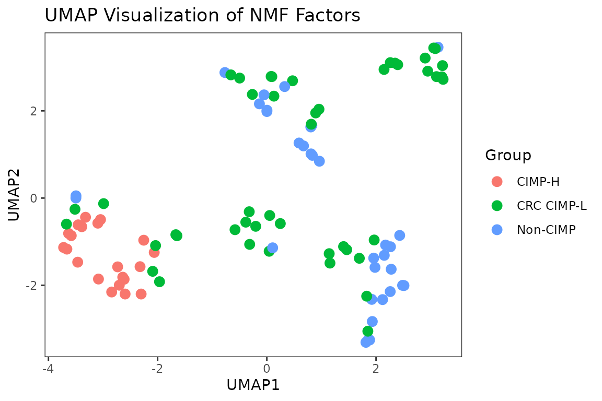
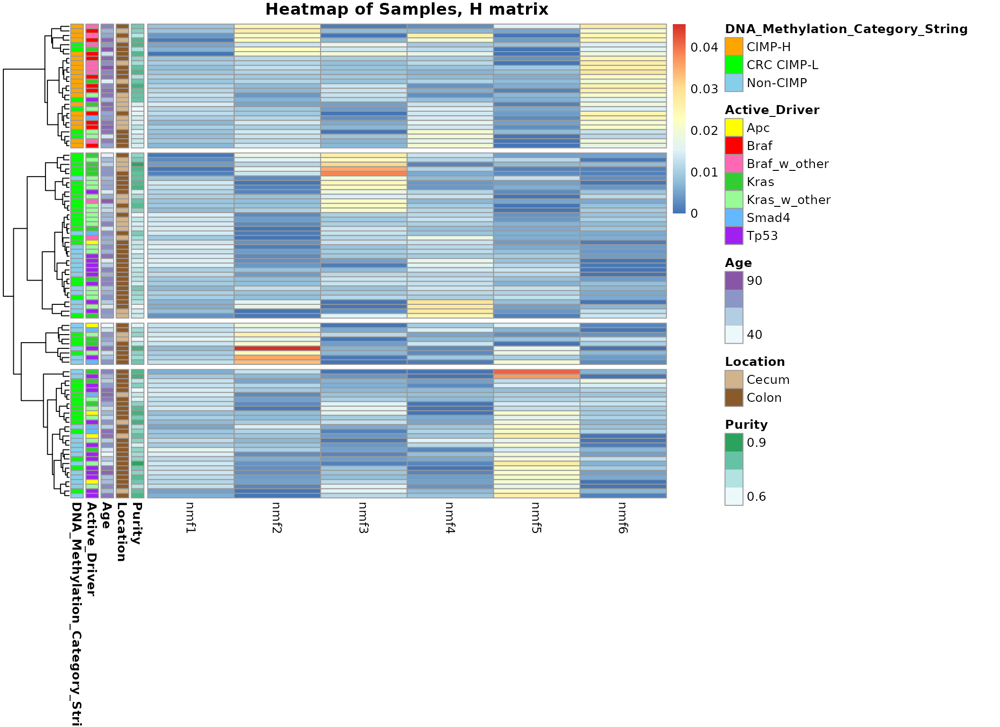

JointRcppML
JointRcppML.Rmd
library(Joint.RcppML)
#> Loading required package: ggplot2
#> Loading required package: RcppML
#> RcppML v0.5.5 using 'options(RcppML.threads = 0)' (all available threads), 'options(RcppML.verbose = FALSE)'
#> Warning: replacing previous import 'RcppML::head' by 'utils::head' when loading
#> 'Joint.RcppML'Load in the example data
This is a very small subset of data from the TCGA-COAD PanCancer Atlas for easy loading. The full example dataset can be loaded from the ExampleJointRcppML package, but the files are quite large. Input files should be pre-processed as is appropriate for the data type.
In this case, the Methylation 450k array data is the Beta values after removal of probes missing >2% of values and imputation of remaining missing values so that there are no NA values. RNAseq data was processed with vst normalization using DESeq2.
This Joint NMF workflow is intended for use with multi-omic data with partially shared samples, meaning that a subset of samples are present in both data sets. All features within the two data types should be distinct.
Betas<- TCGA_COAD_Betas_subset
RNA<- TCGA_COAD_vst_RNAseq_subset
metadata<- TCGA_COAD_metadataIntegrate and Weight data
The purpose of this function is to join the two datasets and weight them appropriately. Column normalization is optional and applied to each dataset independently, prior to weighting. In this case it is applied to the Beta values so that samples with global hypomethylation are given the same weight in the NMF model as all other samples. Following column normalization, the weights are determined by calculating the transformation needed to make the total sum of data1 equivalent to the total sum of data2 for the shared samples.
input<- integrate_and_weight(Betas, RNA, normalize_data1 = TRUE)
# Get the matrix and sparse matrix objects from the output
combined_matrix<- input[["combined_matrix"]]
sparse_matrix<- input[["sparse_matrix"]]Cross validate to determine the number of NMF components
This is a modification of the crossValidate function from the RcppML package and can accept all arguments from RcppML::nmf. This version will work with data that contains NA values, as will always be the case for data used for Joint NMF analysis. It creates an additional mask for the NA values separately from the randomly masked values that are used for model evaluation.
CV<- joint_crossValidate(sparse_matrix, k=1:8, reps=4, n=0.05)
#> Warning in Matrix.DeprecatedCoerce(cd1, cd2): 'as(<matrix>, "ngCMatrix")' is deprecated.
#> Use 'as(as(as(., "nMatrix"), "generalMatrix"), "CsparseMatrix")' instead.
#> See help("Deprecated") and help("Matrix-deprecated").
plot(CV)
Run NMF using the RcppML package
model<- RcppML::nmf(sparse_matrix, k = 6, seed = 1:3, tol = 1e-6, mask = "NA")
#> Warning in RcppML::nmf(sparse_matrix, k = 6, seed = 1:3, tol = 1e-06, mask =
#> "NA"): NA values were detected in the data. Setting "mask = 'NA'"Merge metadata
In this example case we only have one set of metadata, however this function is also designed to work for situations where metadata for each data type is stored in separate dataframes. It takes all the hassle out of trying to join, clean, and align metadata labels of interest for downstream analysis.
labels<- merge_metadata(metadata, metadata, "SampleID", combined_matrix,
metadata_columns = c("Purity", "Location", "Age", "Active_Driver",
"DNA_Methylation_Category_String"))Use the plot functionality as demonstrated in the RcppML package

nmf_group2 <- summary(model, group_by = labels[["DNA_Methylation_Category_String"]])
plot(nmf_group2, stat = "sum")
Make a UMAP of the NMF factors
my_umap<- nmf_umap(model, group_labels = labels[["DNA_Methylation_Category_String"]], n_neighbors=5)
my_umap
Heatmap of Sample Weights
This function uses pheatmap to visualize the sample weights from the
H matrix of the NMF output. You can customize it using any of the
standard pheatmap arguments, and easily pass in metadata labels for
sample annotations.
H_heatmap(model,
group_labels = labels,
group_colors = list(
DNA_Methylation_Category_String=c("CIMP-H"="orange", "CRC CIMP-L"="green",
"Non-CIMP"="skyblue"),
Location=c("Cecum"="tan", "Colon"="tan4"),
Active_Driver=c("Apc"="yellow", "Braf"="red", "Braf_w_other"="hotpink",
"Kras"="limegreen", "Kras_w_other"="palegreen",
"Smad4"="steelblue1", "Tp53"="purple")))
Top Features
Pull out the top features from the W matrix for each NMF component.
This can also set you up for easy downstream enrichment analyses by
getting
the top features for each data type.
Top_features<- topFeatures(model, n=50, filter_dfs=list(Betas, RNA))
Top_features[["nmf1_df1"]]
#> [1] "cg00021978" "cg00007239" "cg00012317" "cg00028598" "cg00008695"
#> [6] "cg00005740" "cg00015340" "cg00029246" "cg00019841" "cg00026141"
#> [11] "cg00009922" "cg00022145" "cg00003529" "cg00021242" "cg00005166"
#> [16] "cg00018850" "cg00026938" "cg00004773" "cg00018696" "cg00013618"
#> [21] "cg00021550" "cg00012529" "cg00026776" "cg00012698" "cg00013196"
#> [26] "cg00019997" "cg00016127" "cg00025715" "cg00019877" "cg00016406"
#> [31] "cg00009750" "cg00016481" "cg00016360" "cg00007326" "cg00023411"
#> [36] "cg00000948" "cg00020533" "cg00001446" "cg00013006" "cg00019511"
#> [41] "cg00015930" "cg00013349" "cg00005215" "cg00020419" "cg00001791"
#> [46] "cg00019678" "cg00019151" "cg00018204" "cg00023351" "cg00003181"